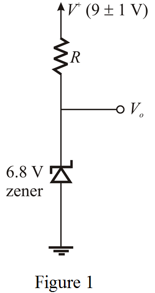
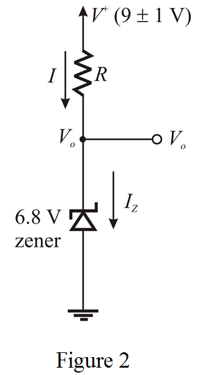
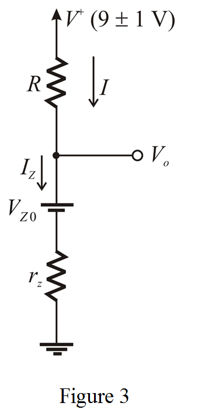

Apply Kirchhoff’s Current Law at node .
Substitute for , for  and for .
and for .
Thus, the value of the resistor, is .
Draw the circuit diagram for the shunt regulator with Zener diode.

Design 1:
Assume that the availability of supply current is not a problem, thus the diode operate at
Redraw the circuit with notations.

Apply Kirchhoff’s Current Law at node .
Substitute for , for and for .
Thus, the value of the resistor, is .
Calculate the value of line regulation.

Substitute  for
for  and for .
and for .
Thus, the value of line regulation is .
Draw the circuit with its equivalent circuit model.

From the equivalent circuit model in Figure 3, the diode is forced to operate at . Then calculate the Zener voltage.
Substitute for , for and for .
Calculate the value of the resistance, .

Substitute for  , for and for .
, for and for .
Thus, the value of the resistor is .
Calculate the value of line regulation.
Substitute  for
for  and for
and for  .
.
Thus, the value of line regulation is .